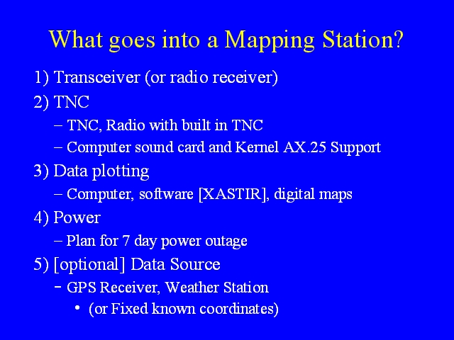

Notes:
A mapping station is more complex than a tracker. A mapping station can transmit its location (or the weather, or other information) just like a tracker. The mapping station can include a GPS and transmit its location as it moves, or if it is at a fixed location, the TNC can be programmed with its fixed location. The Mapping station does not need to transmit any information, and in receive only mode can be operated by anyone. A mapping station needs some form of TNC, either a TNC or a radio with a built in TNC or a sound card and TNC emulator software. The TNC can be programmed to operate as a tracker, to receive only, or to act as a digipeater. The mapping station needs either a radio receiver or a transceiver.
In order to plot locations on maps, the mapping station needs a computer on which mapping software (such as XASTIR, WinAPRS, or APRSDos) is run. This software will need maps, though some mapping software can be configured to download maps on the fly on a live internet connection.
As with a tracker, planning for mapping stations should incorporate plans for 3 days worth of power. This will probably involve a generator at an EOC.